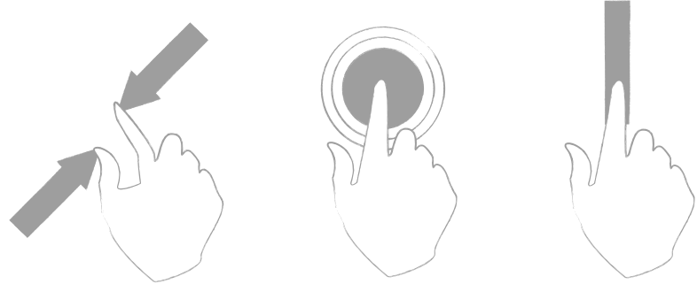

MQTT and Node.js
Messagging in the Internet of Things
Twitter: @matteocollina
GitHub: @mcollina
We #code
How do we #code an app?

We call a Web Server!

How do we #code a Thing?

How do we #code a Thing?
Problems:
- Power Consumption/Battery
- Sits behind a firewall
- Reacts to real-world events fast
- Scalable solution?

MQTT
MQTT
Facts
- Binary Protocol
- Publish/Subscribe
- 3 levels of QoS
- Standard OASIS
- Offline/Disconnected Mode
MQTT vs WebSocket
It's better to use MQTT or WebSocket for live notification in our apps?
- 93x faster throughput
- 11.89x less battery to send
- 170.9x less battery to receive
- 1/2 as much power to keep connection open
- 8x less network overhead
Measured on Android (Source: http://mobilebit.wordpress.com/2013/05/03/rest-is-for-sleeping-mqtt-is-for-mobile/)
Let's move to the #code!
MQTT.js
… http://npm.im/mqtt
… 20k packets/second parser
… Stream based
… High-Level Client API
… Low-Level Server
… Built by @adamvr and @mcollina
Instant Gratification
var mqtt = require("mqtt");
var client = mqtt.createClient();
client.subscribe("nodeconf/eu");
client.on("message", function(topic, payload) {
alert([topic, payload].join(": "));
client.end();
});
client.publish("nodeconf/eu", "hello vikings!");
How the hell can it work on a Browser?
- MQTT.js can be tunnelled inside WebSocket/Engine.io/any binary stream
- The previous example runned inside the browser using WebSocket
- Thanks @substack for Browserify
- Not yet released (sorry :/), but coming later this month (see: adamvr/MQTT.js#PULL_ME and mcollina/mqtt.js-over-websockets)
Mosca: MQTT broker in Node.js
- http://npm.im/mosca
- Standalone usage, through
$ mosca - Embeddable in your app
- Authentication APIs
- Supports AMQP, Mongo, and MQTT as pub/sub backends (if you need them)
- Needs a DB, such as LevelUp, Mongo, or Redis
- Support websockets (not yet published, mcollina/mosca#44)
- Fast, 10k+ messages routed per second
Mosca: Benchmark
Offline Mode
First, subscribe and disconnect.
var mqtt = require("mqtt");
var client = mqtt.createClient({
clientId: "nodeconfslides",
clean: false
}).subscribe("nodeconf/eu/offline", { qos: 1 }, function() {
alert("subscribe done!");
// called when the subscribe is successful
client.end();
});
Offline Mode
Then, someone else publish an important message:
var mqtt = require("mqtt");
var client = mqtt.createClient();
client.publish("nodeconf/eu/offline",
"hello vikings!",
{ qos: 1 }, function() {
alert("publish done!");
client.end();
});
Offline Mode
When our first client reconnect, it receives all the missed messages, in order.
var mqtt = require("mqtt");
var client = mqtt.createClient({
clientId: "nodeconfslides",
clean: false
});
// the offline messages are delivered in order!
client.on("message", function(topic, payload) {
alert([topic, payload.toString()].join(": "));
client.end();
});
Does Offline Mode Scale?
Ponte: the IoT bridge for Web Developers
- Support multiple protocols: HTTP, MQTT, CoAP.
- Based on Mosca, Express, and Node.js
- Will support data transformation, too!
- http://github.com/mcollina/ponte
- Soon part of Eclipse Foundation
- http://eclipse.org/proposals/technology.ponte/
Demo
Thanks!
Twitter: @matteocollina
GitHub: @mcollina